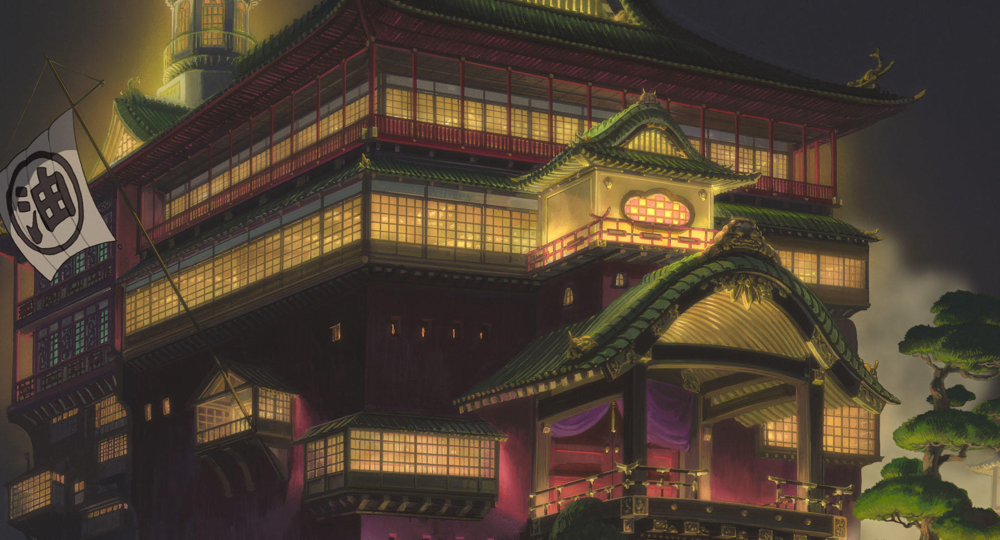
Studio Ghibli · 2001
Spirited Away
- Released
- July 20, 2001
- Runtime
- 125 minutes
- Directed by
- Hayao Miyazaki
- Academy Award
- Best Animated Feature
About the Film
Ten-year-old Chihiro is moving to a new town with her parents when they take a wrong turn and find a tunnel leading to what looks like an abandoned theme park. When her parents help themselves to a feast at an empty food stall, they are turned into pigs.
As night falls, the town fills with spirits. With help from a mysterious boy named Haku, Chihiro takes a job at a bathhouse for the gods run by the witch Yubaba, who takes away her name and calls her Sen. To save her parents and get home, she has to remember who she is.
Spirited Away became the highest-grossing film in Japanese history and held that record for nearly two decades.
- Director
- Hayao Miyazaki
- Screenplay
- Hayao Miyazaki
- Producer
- Toshio Suzuki
- Music
- Joe Hisaishi
- Chihiro
- Rumi Hiiragi (Japanese), Daveigh Chase (English)
- Haku
- Miyu Irino (Japanese), Jason Marsden (English)
- Yubaba
- Mari Natsuki (Japanese), Suzanne Pleshette (English)
Film Stills
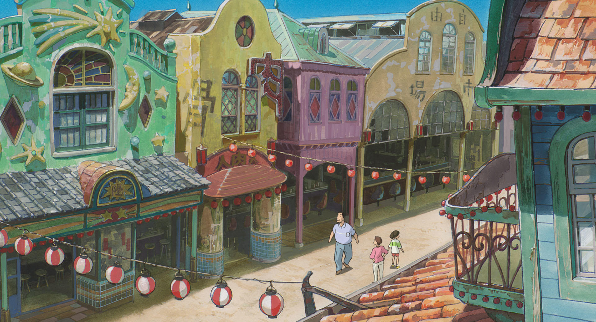
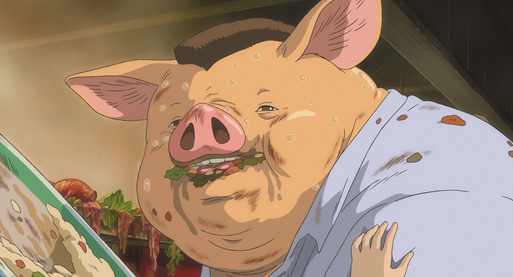
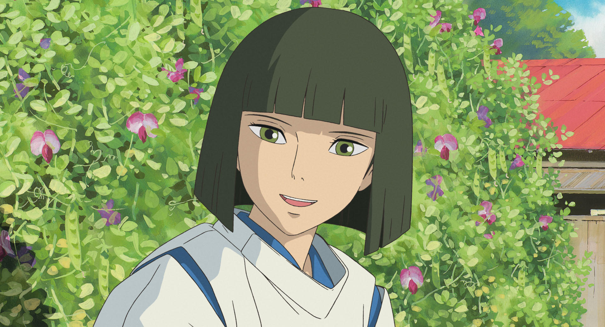
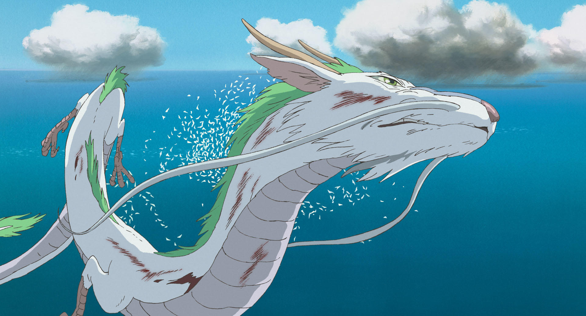
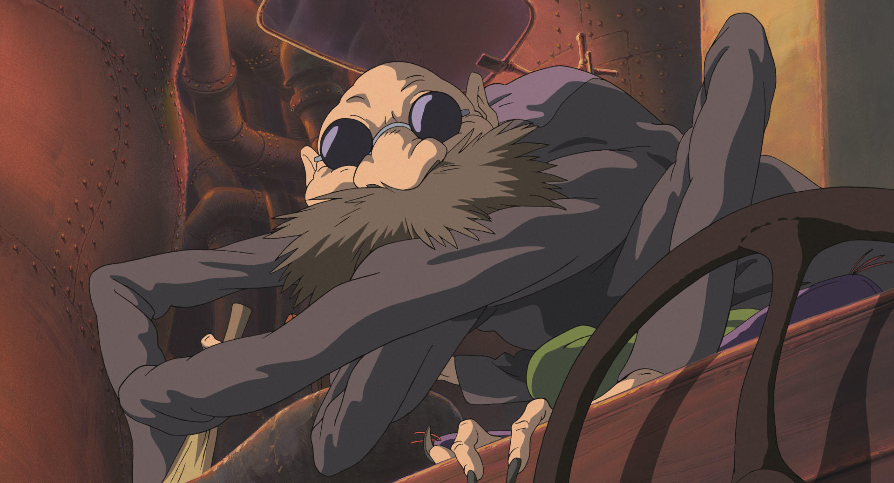
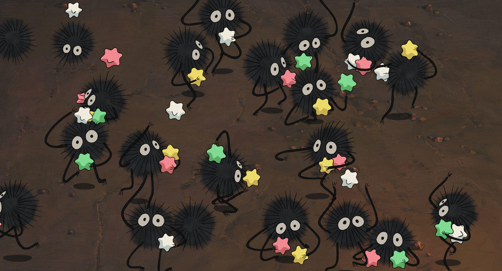
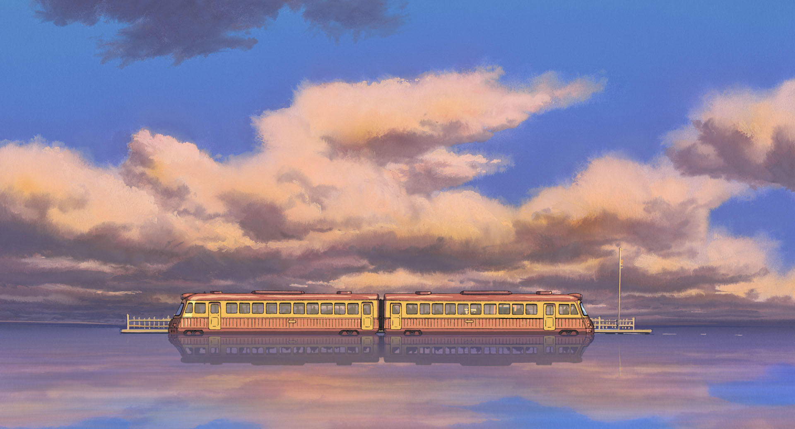
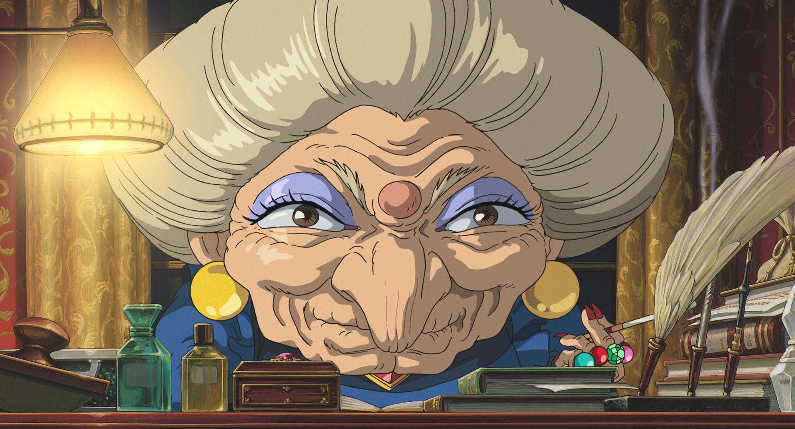
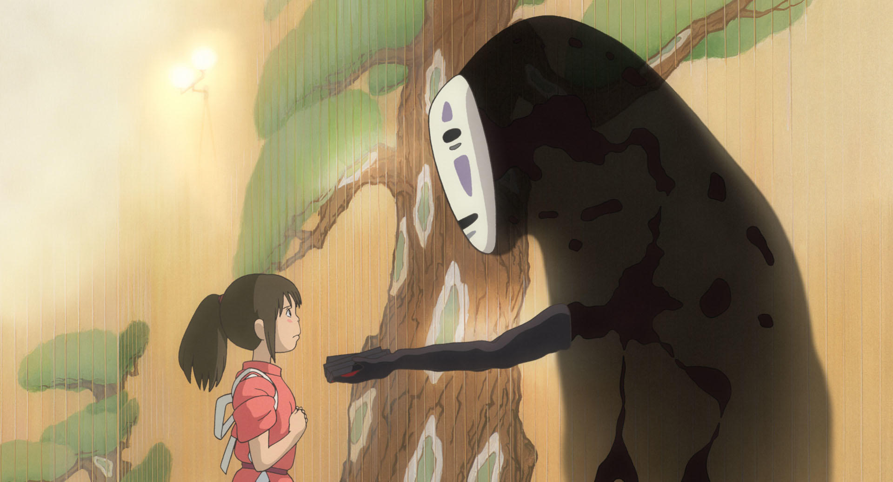
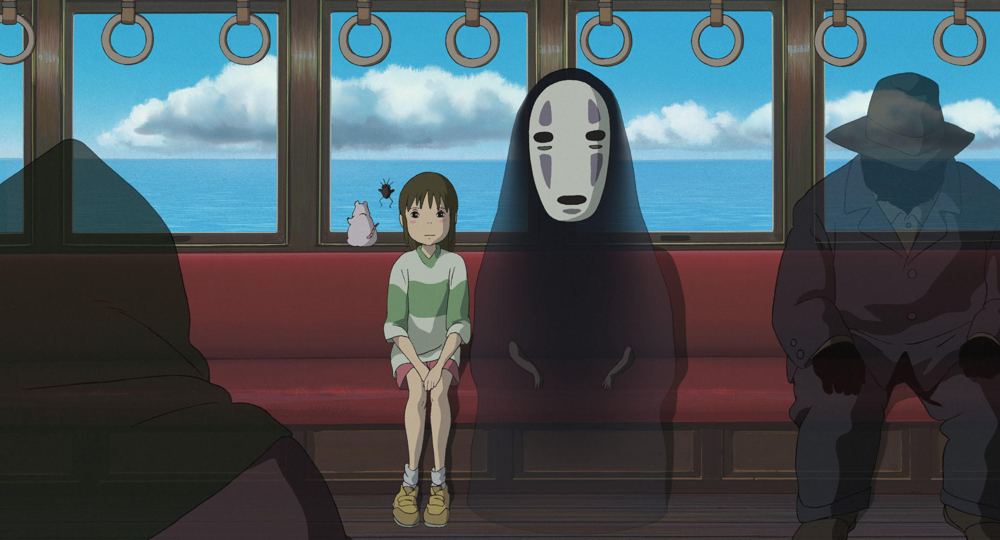